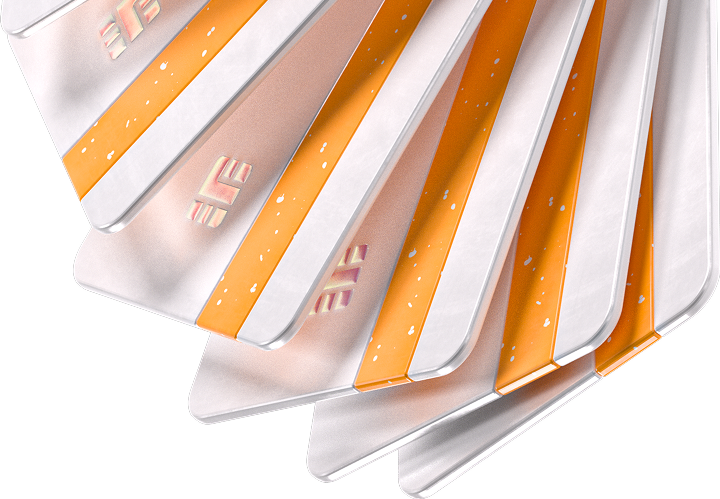
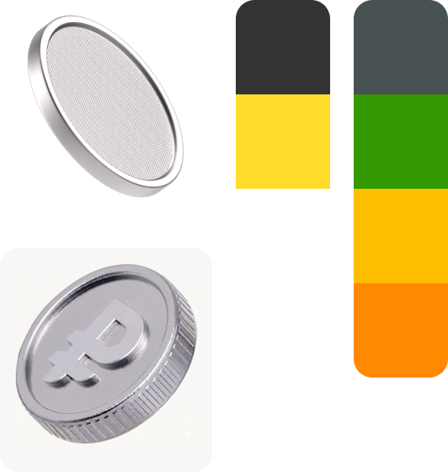
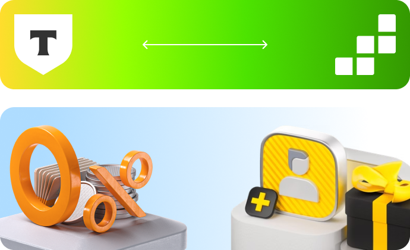
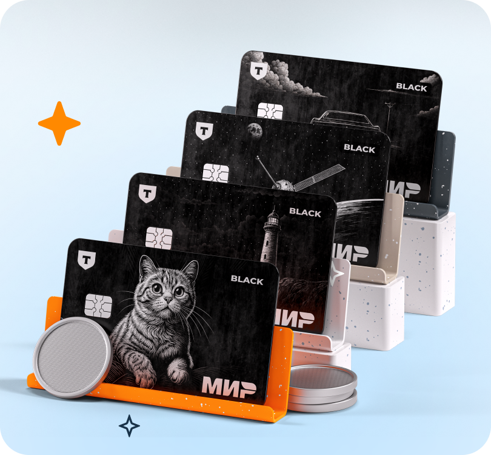
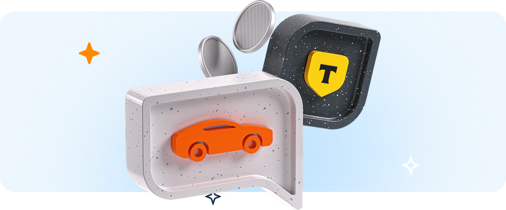
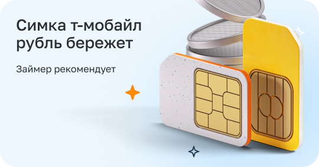
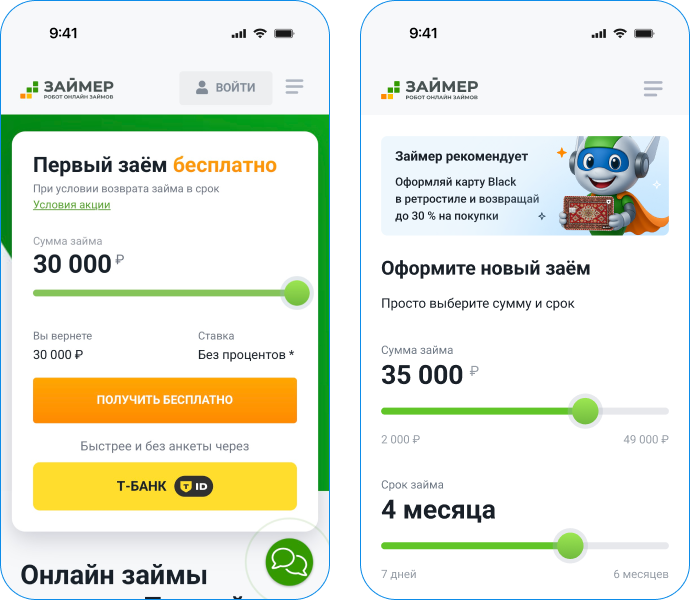

Кросс-промо кампания двух финтех-экосистем для продвижения совместных инструментов:


Разработка универсального Key Visual для рекламы в Личном Кабинете.
Найти баланс между графикой Т-Банка и айдентикой Займера.
Прямая работа и согласование концепций с руководителями Т-Банка.



Пример Key Visual

Разработанный Key Visual и 3D-иллюстрации запущены и работают в Личном Кабинете Займер.
На главном экране сайта интегрирована кнопка Т-Банка, сразу заявляющая о взаимодействии систем.
Полностью настроен и функционирует прием платежей через шлюзы Т-Банка.